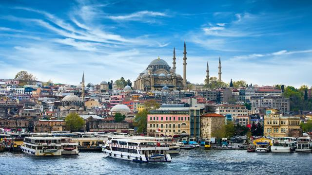
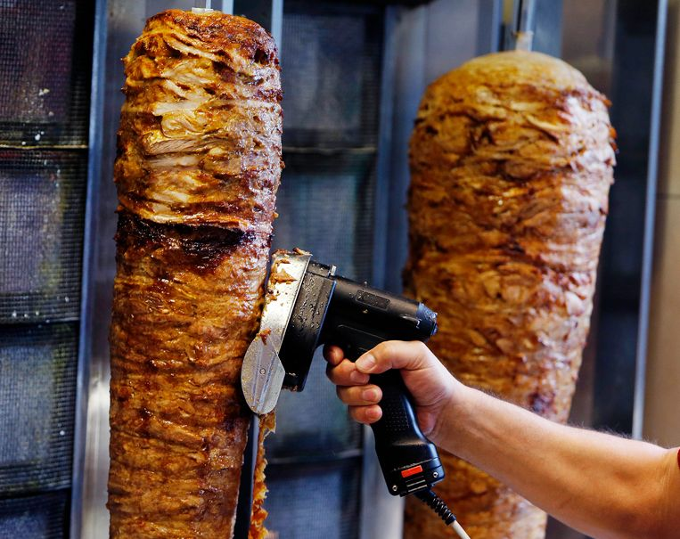

Alle informatie over het land, dat wordt hier verteld.

Laten we beginnen met cultuur. Turkije heeft een mooie cultuur. De hoofdgodsdienst is de Islam. Er staan vel moskeeen in het land. Maar er staan ook synagoges en kerken. Gul zijn behoort ook tot de Turkse cultuur. Het volk in Turkije is heel gul en gastvrij. U bent bij iedereen welkom. Er is ook geen racisme in Turkije iedereen is welkom.

Nu wat over het eten. Turkije heeft heel veel lekker eten, Iets wat iedereen wel kent is döner. In Turkije is dat heel ander. Döner heeft in Turkije een hele andere smaak. Nog iets wat iedereen wel kent is de Turkse pizza, die is in Turkije ook anders. Ze eten het niet met knoflooksaus. Voor de vleesliefhebbers is Tursk eten het beste, het bestaat uit veel vleesmaaltijden, maar er zijn ook vegatarische en vismaaltijden.